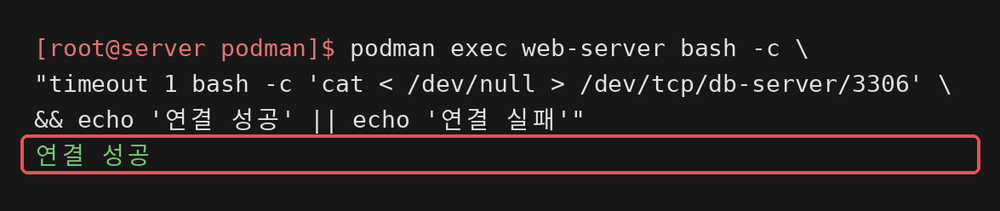
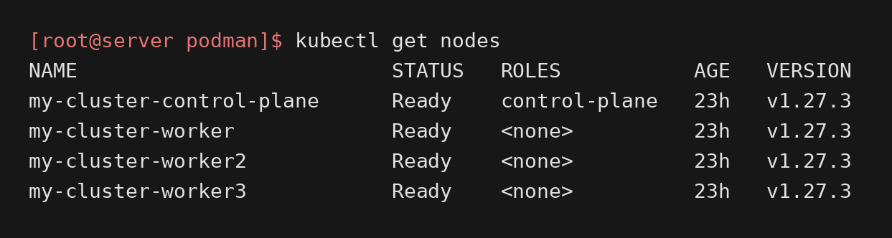
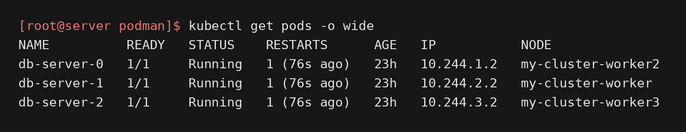
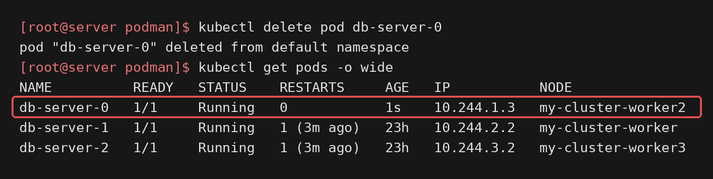

시스템 인프라 운영
Podman 컨테이너 구성 및 kind 기반 HA 실습
Podman으로 WEB/DB 컨테이너를 만들고, kind로 띄운 멀티 노드 Kubernetes 클러스터에 배포해 복제본 유지와 자가 치유를 확인했습니다.
1. 왜 Podman과 kind인가
| 구분 | Docker | Podman |
|---|---|---|
| 구조 | 데몬 기반 (dockerd) | 데몬리스 |
| 권한 | 기본적으로 root 필요 | rootless 지원 |
| 보안 | 데몬에 권한 집중 | 사용자 단위로 권한 분리 |
| systemd 연동 | 제한적 | 서비스 단위로 자연스럽게 연동 |
kind(Kubernetes in Docker)는 컨테이너 안에 Kubernetes 노드를 띄우는 도구입니다. 서버 한 대로 멀티 노드 클러스터를 1분 안에 만들 수 있어 HA 동작을 실습하기 좋습니다.
2. 설치
dnf install -y podman
# kind 설치
curl -Lo /usr/local/bin/kind https://kind.sigs.k8s.io/dl/v0.20.0/kind-linux-amd64
chmod +x /usr/local/bin/kind
kind version
# kind가 Docker 대신 Podman을 쓰도록 지정
export KIND_EXPERIMENTAL_PROVIDER=podman3. 이미지 빌드 및 컨테이너 실행
컨테이너 안에서 직접 고친 설정은 다른 노드로 옮겨지지 않습니다. 그래서 httpd.conf, my.cnf, php.ini 같은 설정 파일을 빌드 컨텍스트에 두고 이미지에 포함시켰습니다.
DB 이미지 (Dockerfile.db)
FROM docker.io/library/mariadb:latest
COPY my.cnf /etc/mysql/conf.d/my.cnf
EXPOSE 3306WEB 이미지 (Dockerfile.web)
FROM docker.io/library/php:8.2-apache
# 필수 패키지 및 PHP 확장
RUN apt-get update && apt-get install -y libmariadb-dev openssl ssl-cert tzdata \
&& docker-php-ext-install pdo pdo_mysql \
&& apt-get clean && rm -rf /var/lib/apt/lists/*
# OS 및 PHP 타임존 (서울)
ENV TZ=Asia/Seoul
RUN ln -snf /usr/share/zoneinfo/$TZ /etc/localtime && echo $TZ > /etc/timezone \
&& printf "[Date]\ndate.timezone = Asia/Seoul\n" > /usr/local/etc/php/conf.d/tzone.ini
# 사용자 Apache 설정 포함
RUN mkdir -p /etc/apache2/conf.d/custom
COPY custom-apache.conf /etc/apache2/conf.d/custom/custom-apache.conf
RUN a2enmod rewrite ssl \
&& echo "IncludeOptional /etc/apache2/conf.d/*/*.conf" >> /etc/apache2/apache2.conf
WORKDIR /var/www/html빌드 및 실행
# 마지막 인자는 빌드 컨텍스트: 이 폴더의 파일(my.cnf 등)이 COPY 대상
podman build -t db-server:v1 -f Dockerfile.db ./db/conf/
podman build -t web-server:v1 -f Dockerfile.web ./web/conf/
# DB 비밀번호는 이미지에 넣지 않고 실행 시 Podman secret으로 전달
printf '%s' 'DB_ROOT_PASSWORD' | podman secret create db_root_pw -
podman run -d --name db-server --secret db_root_pw,type=env,target=MARIADB_ROOT_PASSWORD db-server:v1
podman run -d --name web-server -p 8080:80 web-server:v1
# 컨테이너 간 네트워크
podman network create app-network
podman network connect app-network db-server
podman network connect app-network web-server
단일 서버 자동 시작 (kind 미사용 시)
podman generate systemd --name db-server --files --restart-policy=always
podman generate systemd --name web-server --files --restart-policy=always
cp container-*.service /etc/systemd/system/
systemctl daemon-reload
systemctl enable --now container-db-server container-web-serverPodman 4.4 이상에서는 podman generate systemd 대신 Quadlet(/etc/containers/systemd/*.container) 방식이 권장됩니다.
4. kind 멀티 노드 클러스터
# kind-ha.yaml
kind: Cluster
apiVersion: kind.x-k8s.io/v1alpha4
nodes:
- role: control-plane
- role: worker
- role: worker
- role: workerkind create cluster --name my-cluster --config kind-ha.yaml
kubectl get nodes
로컬 이미지를 클러스터로 전달
Podman 환경에서는 kind load docker-image가 이미지를 찾지 못하는 경우가 있어, tar로 저장한 뒤 불러왔습니다.
podman save -o web-server.tar localhost/web-server:v1
kind load image-archive web-server.tar --name my-cluster5. 배포 및 자가 치유 확인
# web-deploy.yaml
apiVersion: apps/v1
kind: Deployment
metadata:
name: web-server
spec:
replicas: 3 # 복제본 3개 유지
selector:
matchLabels:
app: web
template:
metadata:
labels:
app: web
spec:
containers:
- name: php-apache
image: localhost/web-server:v1
imagePullPolicy: IfNotPresent # 클러스터에 불러온 로컬 이미지 사용
ports:
- containerPort: 80
---
apiVersion: v1
kind: Service
metadata:
name: web-server-service
spec:
type: NodePort
selector:
app: web
ports:
- port: 80
targetPort: 80
nodePort: 30080 # 외부 접속 포트 (30000-32767)kubectl apply -f web-deploy.yaml
kubectl get pods -o wide

6. 정리 및 한계
- 환경 일관성: 설정을 이미지에 포함해 어느 노드에서 실행해도 같은 환경이 됩니다.
- 자가 치유: 복제본 수를 선언해 두면 파드나 노드가 죽어도 Kubernetes가 개수를 맞춰 다시 띄웁니다.
- 실습 범위: kind는 서버 한 대 안에서 동작하므로 물리 서버 장애까지 대비하지는 못합니다. 운영 환경에서는 control-plane 3대(etcd 쿼럼)와 API 서버 로드밸런서를 갖춘 실제 클러스터가 필요합니다.
- DB 데이터: DB를 여러 파드로 띄울 때는 StatefulSet과 영구 볼륨(PV), 복제 구성이 함께 필요합니다.